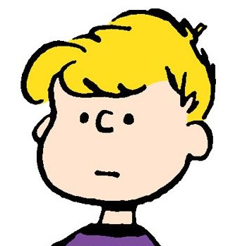

Introdução

Além de ser uma atividade avaliativa, esse portifólio tem como objetivo armazenar, documentar e ser dos projetos realizados na disciplina Interfaces Web I, lecionada por Luis Felipe Grael Tinós.